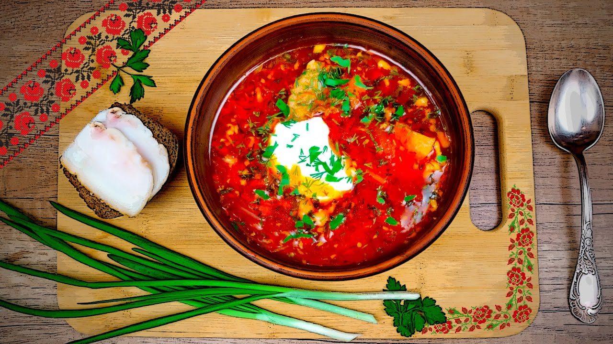

Традиційний Український Борщ
Класична страва, яка зігріває душу та тіло.
🍃

Інгредієнти
- Яловичина на кістці — 500г
- Буряк — 2 шт.
- Капуста — 300г
- Картопля — 4 шт.
- Морква та цибуля — по 1 шт.
- Томатна паста — 2 ст. л.
- Сіль та перець
Час приготування
90 хв
Калорійність
500 ккал
🍃
Інструкція
- Зваріть бульйон з яловичини (приблизно 1.5 години) до готовності м'яса.
- Наріжте картоплю кубиками та додайте у киплячий бульйон.
- Зробіть засмажку: обсмажте цибулю, моркву та натертий буряк з томатною пастою.
- Додайте нашатковану капусту в каструлю за 10 хвилин до готовності картоплі.
- Додайте засмажку, сіль та спеції. Дайте настоятися 15-20 хвилин.
Детальна харчова цінність
| Показник | Значення на 100г |
|---|---|
| Білки | 3.5 г |
| Жири | 2.1 г |
| Вуглеводи | 8.4 г |
| Енергетична цінність | 65 ккал |